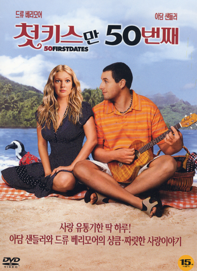

| 
50 First Dates, Peter Cigar
|
My favorite movies
plot-Henry (Adam Sandler) happens to meet Lucy at a restaurant and falls in love with her at first sight.
But Lucy, who thought she had fallen for Henry's flashy mouth,
The next day, I don't even remember him, treating him shamelessly.
Because Lucy suffers from amnesia due to a car accident and lives on the day of the accident.
To win Lucy's heart, Henry tries constantly, and the end is happy ending.
introduction-When the movie was released in 2004, the movie set "short-term amnesia" and the hilarious yet romantic love story
were so much loved that it topped the box office for two consecutive weeks. At first, the title was so childish that I thought it would be a rustic movie,
but I was very impressed to see it later. The film's exotic Hawaiian landscape has even created a desire to travel.
|